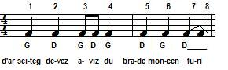
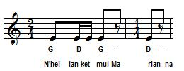
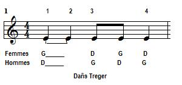
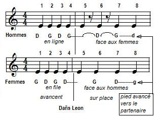
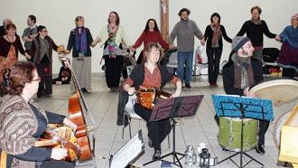
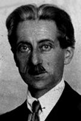

Concert "Barzaz Breiz, la mémoire d'un peuple" donné
le 22 janvier 2023 en l'église de La Madeleine à Paris
.
par le Trio Kervarec (orgue, bombarde, saxophone, biniou)
Un peuple sans musique?
M. Henri Corbes a publié en 1966 un article érudit consacré à Jean-Baptiste Matho qu'il intitule "Le doyen des compositeurs bretons". Or Matho est né en 1660. Aux yeux de l'auteur, il n'existe donc pas de musique bretonne avant cette date. Un "Dictionnaire des compositeurs de musique en Bretagne" publié en 1992 par Vefa de Bellaing (1909 - 1998) le dément à peine. En réalité, la musique bretonne existe, tout comme d'autres formes de culture, mais celles-ci ne correspondent plus aux normes admises par les intellectuels et les historiens de la culture, prisonniers d'un système de valeurs né aux 16ème et 17ème siècles qui privilégie l'
écrit
. Dans ce système il n'y a pas de place pour les créations anonymes, non signées, non imprimées et souvent collectives.
De plus, les créations culturelles bretonnes, sont fortement ancrées dans le terroir et donc aux antipodes d'une culture dominante qui se voulait
universelle
. Le XIXème siècle les redécouvrira pour en exalter l'exotisme (rebaptisé "folklore") et ce n'est que récemment qu'on en souligne au contraire l'
ouverture
, l'aptitude au renouvellement par des apports extérieurs, ainsi que les échanges constants entre l'écrit et l'oral et les apports réciproques des notables et des petites gens à un univers culturel largement commun.
La chanson
Dom Louis Le Pelletier décrit ainsi les Cornouaillais en 1716:" Ils semblent chanter en parlant à leur ordinaire... comme s'ils lisaient un livre noté en plain chant ...: aussi sont-ils grands chanteurs... et ont bien conservé le nom des anciens Bardes, poètes et musiciens des Gaulois:
et les airs de leurs chansons, tout sauvages qu'ils soient ne laissent pas d'être agréables.
Malheureusement de ce peuples de chanteurs, rien se ce qui reste n'est datable avec certitude des XVI et XVIIème siècle, à la seule exception des
cantiques
et c'est ainsi qu'on a coutume de désigner comme le plus ancien recueil de chansons bretonnes le
«Doctrinal ar Christenien»
, publié en 1628 dont l'un des airs «Kantik diwar-benn kavidigez delwenn an Itron Santez Anna» a trait à la découverte de la statue de Sainte Anne d'Auray.
Ensuite plus rien n'est imprimé jusqu'au XIXe siècle, où plusieurs générations de folkloristes et d'érudits se consacrent à une collecte de chants d'une richesse incomparable.
Les collecteurs du XIXème siècle.
La collecte est à l'origine le fait d'aristocrates et de notables qui partagent le goût de l'époque pour le Moyen Age et les bardes gaulois, mais qui connaissent la culture bretonne depuis leur enfance: leurs noms sont évoqués au fil des pages de ce site:
Aymar de Blois
, sa voisine,
Madame de Saint-Prix
, Jean-François de
Kergariou
, Daniel-Louis
Miorcec de Kerdanet
, l'avocat de Lannion Jean-Marie
de Penguern
, son collaborateur
Kerambrun
, ou Julien-Marie
Lehuérou
, l'oncle de l'illustre
François-Marie Luzel
. Et
Marie-Ursule Feydeau du Plessix-Nizon
, la mère du vicomte Théodore Hersart de La Villemarqué qui rencontre un énorme succès auprès des intellectuels de tout le pays avec la publication de son recueil, le Barzaz Breiz en 1839. Viennent enfin des collecteurs qui s'adressent à un public non bretonnant:
Dufilhol
, le chevalier
de Fréminville
ou
Emile Souvestre
.
Cette collecte illustre un genre dominant, la
"gwerz"
, la complainte qui relate des événements spectaculaires, souvent des crimes ou des accidents, auxquels on mêle volontiers un peu de merveilleux qui leur donne une couleur fantastique et tragique.
Le second type de chants du répertoire bas-breton, est également représenté: il s'agit de la
"son"
, chanson d'amour souvent, gaie toujours, même s'il sy mêle parfois de la nostalgie. En Bretagne gallaise, des chansons fort proches de ce second type sont collectées par les folkloristes
Paul Sébillot
(1843 - 1918) et
Adolphe Orain
(1834 - 1918)
Le cas de La Villemarqué
Les recherches de M.
Donatien Laurent
ont montré que
La Villemarqué
a réellement collecté la très grande majorité de ses chansons et le doute n'est pas permis pour ses successeurs. Même s'il en a outrageusement retouché certains, les documents qu'il a collectés ne peuvent être ignorés des historiens. Une partie de ces chansons ont pu franchir des siècles par transmission orale.
Il en est ainsi de la complainte de Scolan, du Vassal de Du Guesclin qui relate la prise de Pestivien par celui-ci en 1369, de l'Héritière de Keroulas qui traite du mariage célébré en 1575 de cette jeune noble avec François du Chastel, seigneur de Mesle, du Siège de Guingamp qui contient à l'évidence des détails empruntés aux sièges de 1489 et de 1591, etc... Si on ne peut en attendre une relation historique raisonnée des faits, elles révèlent pour le moins les goûts et la sensibilité d'une époque par une foule de détails dont la mémorisation est facilitée par la versification et la musique.
Si de nombreuses collections donnent les textes de chansons,
celles qui donnent également la mélodies sont bien plus rares
. La Villemarqué n'en avait d'abord publié qu'une trentaine, dont seize sont harmonisées par
Friedrich Silcher
(1789 - 1860, à qui l'on doit les mélodies qui accompagnent le poème de Ludwig Uhland (1809),
Der gute Kamerad
et celui de Simon Dach (1637),
Ännchen von Tharau
, ou encore celui de Henri Heine, la
Lorelei
) dans la première traduction allemande du Barzhaz, celle publiée en décembre 1840 par A. Keller et E. von Seckendorff et vingt-quatre figurent sans accompagnement dans la version de M.Hartmann et L.Pfau datant de 1859. Il faut attendre la sixième édition du Barzhaz Breizh, celle de 1867, pour y voir figurer en appendice la totalité des 72 airs. Des explications à leur sujet sont fournies à propos du chant "
La dame de Nizon
.
Fêtes et danses
Les fêtes chômées (cent-six en 1619, dans le diocèse de Saint-Malo), les fêtes propres à chaque paroisse, les baptêmes, les noces qui durent plusieurs jours, le nouvel an et le travail rural lorsqu'il exige des renforts de main d'œuvre sont autant d'occasion de danser et de donner de la voix. C'est ainsi qu'à l'article "gousse" de son dictionnaire (1732) le père Grégoire de Rostrenen indique: "Danser sur le lin sur l'égousser:
dañsal war ar boloc'h
". M.
Jean-Michel Guilcher
fait une description contemporaine, mais analogue de l'écossage du blé noir, l'
"ambleudadeg ed du"
.
De même le tassement d'une
nouvelle aire à battre
est évoqué par plusieurs chants du Barzhaz. Le rythme nécessaire à l'accomplissement de ce terrible travail a peut-être influencé celui de la gavotte. Louis Le Pelletier appelle cette pratique "gweliad" et précise "On y lutte ensuite, et on propose un ou plusieurs prix aux vainqueurs."
De l'avis unanime des visiteurs, la danse est un domaine où les Bretons excellent. Ambroise Paré (1510 - 1590) parle du Duc d'Etampes qui fait venir à une fête "grande quantité de filles villageoises pour chanter des chansons en bas-Breton, où leur harmonie était de coasser comme grenouilles lorsqu'elles sont en amour. En outre, il leur faisait danser le trihori de Bretagne ce qui ne va pas sans remuer les pieds et les fesses. Il les faisait moult bon ouir et voir."
Plus tard, madame de Sévigné, en août 1671, relate une soirée où "MM. de Locmaria et de Coëtlogon avec deux Bretonnes dansèrent des passe-pieds merveilleux et des menuets... avec une délicatesse et une justesse qui charment...". Ces danses sont mal identifiées. Nous n'en connaissons qu'une brève notation , l'"Orchésographie" de
Thoinoy Arbeau
datant de 1688. Jean-Michel Guilcher a pu y reconnaître avec quelque certitude le
"trihori"
bas-breton, plus surement l'ancêtre de la
gavotte
que du passe-pied de Haute-Bretagne. Ces danses sont des
"branles"
c'est à dire des danses en chaîne habituellement circulaire. Les instruments cités par tous les témoins ou représentés sur les tableaux et les gravures, sont le hautbois breton dit "bombarde" , la cornemuse et le tambour. Curieusement, le violon n'est cité que par madame de Sévigné, alors qu'un recensement très précis de 1629 mentionne à Rennes six joueurs et un "faiseur" de violon.
La gavotte
Le musicologue Jean-Michel Guilcher fit paraître en 1963 une étude exhaustive intitulée " La tradition populaire de danse en Basse Bretagne" qui, sur la base d'enquêtes menées depuis 1945, décrit l'ensemble des danses en usage au moment où cette pratique cessait d'être spontanée pour devenir le fait des adeptes du "revival".
Une grande partie de l'ouvrage est consacrée à la
gavotte
, nom quimpérois ("Kavotenn") d'une danse dont le domaine d'extension est l'intérieur d'une ligne laissant au nord Landerneau, Commana et Belle-Île-en-Terre, à l'est Bourbriac, Saint-Nicolas-du-Pélem, Mûr-de-Bretagne et Rohan, au sud Locminé, Baud et Pont-Scorff. Ce nom et ses équivalents, des composés du mot "dañs" s'appliquent souvent à une suite réglée de danses dont la gavotte est la première figure.
Cette danse, généralement chantée, peut revêtir quatre formes: ronde, chaîne ouverte, chaîne tantôt ouverte et tantôt fermée, couples en cortège ou isolés. Ces formations alternent dans le tour de danse (dañs tro) en trois parties qui commence par une ronde ou une chaîne, se poursuit par un bal (tamm kreiz) avec une reprise dansée par couples et s'achève par une seconde gavotte en ronde.

Le pas de gavotte est une phrase en huit temps exécutés au pas de course, selon la formule: "un, deux, trois, p'tit pas, un, deux, trois, pied en l'air".
L'archétype de Cornouaille ou
Gavotte des Montagnes
se retrouve ailleurs avec de multiples transformations locales: "dañs fisel" de Maël-Carhaix,
"dañs bro kost er hoed"
à Plélauff et Gouarec, la "ridée" de Pontivy, etc. (Chacun des 2 liens précédents ouvre sur une VIDEO You-Tube).
"Kan ha diskan"
L'accompagnement musical peut être instrumental, mais le plus souvent vocal et consiste alors en un chant alterné soit entre deux solistes, selon le procédé dit "kan ha diskan", soit entre un soliste et un choeur. Le premier est typique de la ronde cornouaillaise: le chanteur ("kaner") expose la première phrase, le second ("diskaner") en dit la fin avec lui, puis redit seul la phrase entière en apportant souvent des différences légères de dessin mélodique et d'ornementation. Le "kaner" le double sur les dernières notes, puis enchaîne seul la phrase suivante, et ainsi de suite, avec une succession de renforcements et d'amenuisements du son jusqu'à la fin de la chanson. Un exemple est donné à propos du chant
"L'orpheline de Lannion"
.
Le procédé est évoqué dans le chant
Jeanne la Flamme"
, couplet 20. L'assujettissement des poèmes aux "tons" du répertoire n'est pas fixe et le chanteur choisit le texte qu'il va dire et l'air sur lequel il va le chanter.
Le chant commence par un prélude alterné, sur un rythme de marche lente. Ce sont des paroles dénuées de sens, telles que "tiralalaléno" auxquelles fait suite, après quelques couplets, un texte qui constitue un prologue de longueur variable, souvent, une invitation à la danse.
Enfin, le prologue étant achevé, les chanteurs entament un couplet sans paroles, puis la chanson proprement dite sur le rythme vif et strict du pas de gavotte. Le chant se termine par de nouveaux "tiralalaléno".
Les airs de gavotte appartiennent à deux espèces:
Le
ton simple
est réservé à la première gavotte de la suite tripartite, d'où son autre nom de "ton kentañ" (premier ton), et se compose de deux phrases de huit temps dont chacune est dite par le premier chanteur puis répétée par le second.
Exemple:
Boudoin et Le Goff, Plévin, 1953
(Prologue:
Avañsit-ta kamarad, pe oamp on-daou n'em gavet, Deomp da ganañ un dro zañs, O, aliez a memp graet
)
Le
ton double
(ou long) est composé de deux parties inégales, dont chacune est dite par le "kaner" et le "diskaner": la première est une phrase de ton simple et la seconde est composée de deux phrases de huit temps souvent soudées par un motif de liaison.
Exemple:
Morvan et Landré, Scrignac, 1954
(Paroles:
Ha goude ma'm be baleet on daou dre Vreizh Izel, Hon doa gwelet kalz ilizoù, lalalalala lé lalala lo, o, la lala lala lo, kalz a dourioù uhel.
)
Ces schémas de base sont combinés par les chanteurs avec une liberté rythmique et des broderies dont la page
Breizh o koroll
donne quelques exemples (lignes "Kan ha diskan").
On trouvera aussi des airs utilisés en bordure de mer avec d'autres principes d'emploi (doublage du ton simple, mais non du ton double,
airs composés de deux tons simples
, etc.) et des airs du Cap-Sizun (CS) et du Bas-Léon où le rapport musique-mouvement de gavotte n'est plus apparent.
L'accompagnement instrumental
Le Bas Léon et le Morbihan ont maintenu entre les deux modes d'accompagnement, vocal et instrumental, un certain équilibre, tandis qu'en Cornouaille l'évolution s'est faite en faveur de l'accompagnement instrumental.
L'accompagnement instrumental associe le plus souvent, en tout cas à partir du XIXème siècle, un joueur de bombarde ("talabarder") qui joue par intermittence (du fait de l'effort qu'exige son instrument), assis à droite d'un "biniaouer" qui, lui, joue sans arrêt. Ces sonneurs sont rétribués. Parfois il s'y ajoute un tambour. Ce sont ces "ménestriers" qui, en outre, chantent et disent des vers, que les dictionnaires anciens désignent par le mot "barzh" (Lagadeuc, Dom Lepelletier).
Le colonel
Alfred Bourgeois
, ami du célèbre sonneur, Matelin An Dall (Mathurin l'Aveugle), est l'auteur d'un "Recueil d'airs de biniou et de bombarde" publié à Rennes vers 1897. C'est lui qui a fourni les accompagnements musicaux publiés par la "Kenvreuriez Sonerion Pariz", sous le titre
"Kanaouennoù Pobl"
, en 1959). Il déplorait que les sonneurs de cette époque préfèrent aux chansons bretonnes "les chansons françaises les plus vulgaires". S'ils ont, en effet été des agents de renouvellement du répertoire, ils ne faisaient que prolonger une tradition fort ancienne d'emprunts qui n'étaient pas de simples copies comme le montre l'exemple de l'air français
"C'est le curé de Môle"
utilisé comme timbre dès le dernier quart du XVIIème siècle et qu'on rencontre sous diverses formes en pays de gavotte.
Avec la ridée, c'est l'une des deux danses principales de la partie du Morbihan qui s'étand au sud et au sud est de Guéméné et Pontivy. On la désigne sous des noms divers:
"en dro mod koh"
,
"pilé menu"
, "guédillée",
"rond"
et "ronde" ...et même "gavotte" autour de Lorient et Hennebont, la danse de Cornouaille étant alors appelée ""dañs a ruz". C'était à l'origine une ronde qui faisait partie d'une suite de deux termes "la
ronde"
et "le
bal"
. Elle s'est d'abord dansée en ronde (fermée), puis en chaine (ouverte). Enfin, sous l'effet d'une figure consistant pour le danseur à lancer sa cavalière vers le centre du cercle pour l'amener face à lui, en cortège par couples. Le nom breton de cette figure,
Kas e-barzh
désigne couramment la danse entre Lorient et Carnac.
L'unité de mouvement est une phrase divisée en deux motifs équivalents constituant
quatre mesures à deux temps
. L'accompagnement traditionnel était soit le couple biniou-bombarde ou le violon en pays gallo, soit le chant alterné entre soliste et chœur des danseurs. Le groupement texte donné - musique donnée passe pour stable.
Il s'agit souvent de
chansons à compter
qui n'ont qu'un couplet que l'on répète à l'infini en ajoutant chaque fois une unité au nombre d'objets qu'il désigne ("deux épis", "trois épis", "il est dix heures"...). Ces airs puisent largement dans un ancien fonds français.
J.M. Guilcher ne décrit pas à propos de cette danse, mais à propos de la ridée, les mouvements de bras caractéristiques que l'on observe sur la
VIDEO You-Tube
qui illustre cette danse.
En Hanterdro
Egalement appelé "Hanterdañs" ou "demi-tour", il a les mêmes limites géographiques que l'en-dro. C'est une ronde de rythme impair (3/4, cf
VIDEO
) qui progresse vers la gauche sur les quatre premiers temps et dont les deux derniers temps retardent la progression. On peut supposer que des airs français d'un rythme fort éloigné à l'origine ont contribué à constituer le répertoire musical de l'hanterdro:
"La belle qui fait la morte"
,
"A la claire fontaine"
,
"En revenant de noces"
.

Dans les mêmes limites géographiques, on trouve une
"ronde à deux pas combinés"
(quand elle porte un nom c'est celui d'"Hanterdro" ou "Tricot") où une partie A de hanterdro est suivie d'une partie B d'en-dro.
Une autre
variante
combine des pas d'hanterdro avec deux pas d'endro suivis d'un pas d'hanterdro.
Enfin le
"Gymnaska"
de Cornouaille méridionale est une ronde de rythme 3/4 où alternent deux pas de course vers la gauche et deux balancés de bras sur le pied gauche puis sur le pied droit.
En se référant à l'"Orchésogarphie" d'Arbeau, on peut voir dans le
Branle double
qui comporte quatre temps de déplacement vers la gauche, suivis de quatre temps vers la droite, l'ancêtre de l'en dro et dans le
Branle simple
(double pas à gauche, simple à droite), celui de l'hanterdro.
Ces danses se rencontrent en Morbihan dans les mêmes limites géographique qu'en dro. Les ridées du Bas-Léon leur sont apparentées. A Pontivy le laridé constitue le premier et principal terme d'une suite réglée. Il s'agit d'une ronde où les danseurs se tiennent par les majeurs ou les petits doigts. Le tempo varie de la course à la marche et la jambe d'appui n'effectue jamais de rebondissements. C'est surtout une
danse de bras
dont le mouvement doit être uniforme: balancement simple vers l'avant, vers l'arrière, bras demi-fléchis vers l'avant, coudes vers l'arrière, mouvement courbe des mains vers l'avant, descente des mains vers l'arrière sont les éléments constitutifs des ridées à six temps et à huit temps.
Dans les
laridés à six temps
si les pulsations de la phrase mélodique coïncident avec celles du mouvement, il n'en va pas de même des mesures qui ne s'ajustent que rarement.
En revanche quand la phrase en mouvements est de
huit temps
, la plupart des mélodies conviennent parfaitement à la danse. Mais l'entrain d'une mélodie peut la faire juger propre à la danse, même lorsque son architecture n'y convient pas. C'est le cas de la chanson
Quand j'étais chez mon père
. Aussi le répertoire musical du laridé est-il très étendu: on y reconnaît des airs de Basse Bretagne utilisés pour d'autres danses telles que la gavotte et une quantité de chansons en français. Les "chansons à compter" sont très nombreuses. Les ridées du Bas-Léon, tantôt à six, tantôt à huit temps, sont des rondes similaires qui n'ont pas le balancement de bras complexe du Vannetais.
La ridée bien qu'elle soit la danse vannetaise par excellence n'a conquis son importance qu'à une date récente (dernier tiers du XIXème siècle).
Pour voir une démonstration en VIDEO de ridée à 8 temps,
cliquer ici
.
Les trois danses qui suivent semblent bien plus difficiles à caractériser par des allures musicales précises.
La
dañs tro plin
des Côtes d'Armor, au sud de Guingamp, est une ronde à pas plutôt lents de rythme binaire, appelée
"dañs fanch"
en pays de gavotte; Elle est dansée dans un tour ("tro") de danse en premier lieu en pays de Saint-Brieux où "danser au tour" signifie danser la ronde. La suite comprend souvent 2 rondes séparées par une danse de repos (bal), parfois suivies d'un passepied. Les mouvements sont différents en pays gallo où la ronde est chantée en alternance soliste - chœur et en pays bretonnant, on préfère un "kan ha diskan" entonné par deux danseurs, ainsi que le couple biniou - bombarde. On trouve dans ce répertoire des
airs à 4/4
, mais aussi
à 2/4
ou à
12/8
.
La structure fondamentale (A), qui est commune à la Haute et à la Basse Bretagne est un motif de 4 temps.Le danseur pose le pied gauche à un pas de distance à gauche du pied droit puis effectue un changement de pas latéral (G D G) aux temps 1 et 2. Puis il prend appui sur le pied droit , ammené à l'assemblé du gauche et garde cet appui au temps 4.
En Pays bretonnant, sous réserve d'altérations secondaires, le changement de pas et le rebondissement (- - - ) sont employés en ordre inverse (B).
Pour voir une VIDEO donnant une démonstration de Dañs tro Plinn sur une composition de Yann-Fañch Perroches interprétée par le compositeur,
cliquer ici
.
Dañs Treger

La "dañs tro" du Trégor
dañs Treger
ou "dañs tro braz" ou "dañs plen" faisait partie d'un groupement appelé "abadenn" (séance). Elle était dansée par un front d'hommes et un front de femmes se faisant face et précédait le "bal" ou "contredanse" 'cortège) et le "passepied" (cortège ou double file). Le tempo (4/4) varie de
calme
à
course
. Il comportait un appui ferme du pied aux temps 1 et 2 que l'on reconnaît aisément dans l'exemple donné.
Dañs Leon
La
dañs Leon
ou "dañs giz Leon" (entre Landerneau-Morlaix et la montagne d'Arrée) se danse aussi sur deux fronts.

Elle esr entrée dans la littérature folklorique sous le nom de
piler lann
, "pileur d'ajonc", dont l'opération serait mimée par la danse. On a parfois dit aussi
"dañs a benn"
(par opposition à la
"ronde"
qui n'a pas de "penn", de tête).
C'est une danse au rythme mesuré (1 noire= 100 à 120), toujours chantée. Le pas des hommes, un peu acrobatique, comporte une formule d'appui pratiquement immuable en deux parties de quatre temps: quatre pas de marche latérale aux temps 1 à 4, suivis au temps 5 d'une vigoureuse détente de la jambe droite vers la droite, d'un saut (temps 6) qui retombe sur le pied droit, en croisant la jambe gauche devant la droite. Un nouveau saut fait retomber le danseur au temps 7 sur le pied gauche, jambe droite repliée en arrière. Le danseur étend devant lui la jambe droite et la pose sur le talon (temps 8). Les pas des femmes sont plus simples, mais s'accompagnent de changements d'orientation du corps qui les mettent de profil par rapport aux danseurs. Les pas s'accompagnent aussi d'un mouvement des bras.
La danse est habituellement accompagnée d'un chant lancé par un soliste et repris par deux ou trois hommes à l'unisson ou par un choeur. Le chant est repris de feuilles volantes. Le soliste y ajoute quelques vers de son cru inspiré par les circonstances. La page
Breizh o koroll
donne quatre exemples de "dañs Leon".
On trouvera à la page "Dansoù all" une
VIDEO
de démonstration pour cette danse.
Le bal (tamm kreiz)
C'est un élément essentiel d'une suite traditionnelle de danses: un intermède de repos entre deux rondes fatigantes (gavottes, dañs plinn) en Haute-Cornouaille. C'est un
"tamm kreiz"
(morceau intermédiaire, "entredeux", "entretemps") par excellence, auquel on substitue parfois d'autres danses par exemple le "passepied" du pays Fanch. C'est l'élément conclusif en Morbihan, en Basse-Cornouaille et peut-être en Trégor et même en Bas-Léon.
Dans sa forme ancienne, une partie A sert au déplacement des danseurs, en une ronde ou un cortège, au pas de marche (souvent deux phrases de huit temps). La partie B, au refrain, est la même partout: on se sépare en couples pour danser l'un devant l'autre: appui sur le pied gauche pendant deux temps, tandis que la jambe droite balance, puis le pied droit prend l'appui. Ce balancé se termine par un saut.
M. J-M Guilcher décrit une quantité de bals "modernes" différents: "bal tournants", "bals pontivyens" et "tamm kerh" (un peu d'avoine), "bals du pays Fisel (Maël-Carhaix), "bals modernes de Haute-Cornouaille", "Bals du Pays de Quimper", "bals du Finistère méridional", les "chaînes à quatre", le "bal du Trégor".
La page
Breizh o koroll
donne six exemples de "bals" divers, dont l'un est une danse chantée en
"kan ha diskan"
et d'autres ont tantôt un rythme type de
6/8
, tantôt un rythme 2/4. Le
dernier exemple
oppose nettement le rythme de promenade et le tempo rapide.
Le
passepied
de (Haute) Bretagne était une danse en deux parties: marche ou galop latéral du groupe suivi d'un pas caractéristique correspondant à un motif musical de quatre temps:
4/8
ou
12/8
. Il est tantôt joué par des sonneurs, tantôt chanté (couplet unique de chanson énumérative. Ce passepied serait l'ancêtre de celui dansé à la cour de France.
Le
jabadao
est souvent considéré comme la danse bretonne par excellence, même si son nom évoque le sabbat
et le désordre, ce qui lui valut d'être combattu par le clergé. L'abbé Guillerm (1905) assure avoir entendu dire que "c'est la danse qu'exécutaient les Juifs sur le Golgotha lorsqu'ils eurent crucifié Jésus". En réalité les danses qui portent ce nom ne peuvent se prévaloir d'une telle antiquité et elles ne sont pas connues de Cambry qui visita le Finistère en 1795. Elles ont partout la même ordonnance: déplacement circulaire pendant la première partie de l'air; alternance de mouvements vers le centre et de reculs pendant la seconde. Selon l'endroit, ceux-ci se font par couples ou en ronde indivise. Un grand nombre d'airs de gavotte permettent de danser le jabadao. On trouvera toutefois sur la page
"Breizh o koroll"
quelques airs qui lui sont réservés. (Cf. aussi la
VIDEO
relative à cette danse).
L'étude de M. Guilcher, dont ce qui précède tente d'être un résumé, traite ensuite de la
dérobée du Trégor
dont l'antécédent ancien est la "danse de Montferrat" dont parle la "Chartreuse de Parme" et empruntée au nord de l'Italie sous le nom de
"monfarine"
. Il s'agit d'un cortège par couples suivi de deux phrases de huit temps dont la figure est variable.
Il s'achève par des danses d'importance moindre: la "danse du loup", la
"danse des baguettes"
, la "danse ronde aux trois pas" et par des rondes-jeux:
"Plac'hig an douar nevez"
et
"danse de l'étourdi"
.
L'ouvrage se conclut sur cette constatation désabusée: "La mode parisienne s'imposait dans les campagnes. La civilisation traditionnelle avait fait son temps."
La suite de Loudéac et le Rond de Saint-Vincent
Ce sont les danses le plus souvent citées en dehors de celles de Basse Bretagne étudiée par M. Guilcher qui les évoque incidemment à propos de la "Dañs Tro Plinn" à laquelle elles s'apparentent.
La suite de Loudéac
est une ronde où les danseurs se tiennent par le petit doigt et agitent les bras. Elle comprend 4 parties, le rond de Loudéac proprement dit (ronde rapide), le Baleu (cortège) de l'Oust qui comprend la 'ballade' et la 'figure', une seconde ronde de pas semblable à la première et improprement appelée "ton doubl" par référence à la gavotte de Basse-Bretagne. La suite se termine par la Riqueniée, une ronde rapide comprenant également les 2 parties "ballade" et "figure". (Cf.
VIDEO
).
Le
Rond de Saint-Vincent sur Oust
C'est une ronde assez lente, tenue par le petit doigt. (Cf.
VIDEO
)
"Il existe plusieurs styles ou manières de danser le Rond de Saint-Vincent sur Oust (au NO de Redon). Celui qui est décrit ici est pratiqué sur les communes de Peillac et Saint-Perreux ainsi que sur une partie de la commune de Saint-Vincent sur Oust. C'est probablement celui qui est le plus prisé par les anciens.
Les pieds se posent bien à plat, en donnant "une impression" de s'enfoncer... Le temps 1 est plus marqué que les autres temps. Sur les temps 1 et 2, les danseurs doivent avancer en penchant un peu le buste en avant tandis que sur les temps 3 et 4, ils doivent reculer tout en se redressant. On se positionne toujours face au centre.
Les bras sont "relativement" tendus et scandent la danse par un léger mouvement de bas en haut (temps 1 et 2), en accentuant le déplacement avant / arrière du corps. Au temps 3, les avant-bras sont levés vers le haut et au temps 4, ils sont dirigés vers le bas. Les danseurs doivent se tenir par le petit doigt tout le long de la danse."
(Source: site 'Tamm-kreiz.com')
Les danses bretonnes ne devraient jamais fatiguer le danseur
La "Journée Renaissance" organisée par le fin connaisseur de l'art chorégraphique qu'est l'homme de lettres
Padrig Kobis
, dans son coquet village de Kerflaouénan en Léon, le 5 avril, fit une large part à l'initiation aux danses de cette époque, par Isabelle Deverchy et le groupe de musique ancienne Capriol & Cie. La parenté entre ces danses de cour et certaines danses traditionnelles de Bretagne a été évoquée ci-dessus. A la suite de cette mémorable manifestation, M. Kobis, m'a fait part de rélexions originales concernant ces dernières.
Je pars de ma propre expérience corporelle.
J'ai d'abord été frappé par la fatigue que pouvait procurer l'
en-dro
tel qu'il est malheureusement dansé aujourd'hui. Deux raisons à cela :
- On a oublié que dans cette danse les 4 premiers temps voient les danseurs avancer en oblique de la ligne de danse avant de reculer à tout petits pas sur les 4 suivants pour revenir sur cette ligne. En restant sur la ligne de danse comme de nos jours (incompréhension par simplification à une époque où on ne se fatigue plus, donc on n'a plus besoin de se "défatiguer"), le danseur sent ses muscles de la cuisse droite se fatiguer beaucoup.
- A l'inverse, et à condition avant tout de ne pas rester sur la ligne de danse, si ce danseur veut bien lâcher/détendre ("laisser pendre") cette jambe droite dans la seconde partie tout en l'enroulant dans un mouvement circulaire (sens horaire) relâché, il sent aussitôt la détente et la disparition de cette fatigue.
Remarquez que, dans les danses de Cornouaille chorégraphiées comme celle de l'Aven, le 4e temps est aussi marqué par un enroulement de la jambe qui défatigue.
Ailleurs, en
gavotte des montagnes
, c'est le lever franc de la jambe droite sur ce 4ème temps qui défatigue cette jambe, qu'on laisse ensuite retomber librement sans frapper le sol autrement que par son propre poids. Si l'on fait le "3 et 4" à ras de terre comme préféré de nos jours, on ne comprend plus la portée de cette fioriture introduite par des paysans ayant travaillé dur pour se défatiguer (cela n'existait pas dans les branles de la Renaissance).
Autre expérience révélatrice sur l'
hanterdro
. Cette danse a été supplantée par la ridée 6 temps, bien plus moderne et qui séduisait les jeunes, dès les années 1880. Quand on a voulu la faire renaître au milieu du XXe siècle, presque plus personne n'en avait le souvenir. On a choisi une prise gavotte "fixe" pour les bras, très grave incompréhension parce que le "grand frère" en-dro et le "fils" ridée sont des danses où les bras mènent, et on voit aujourd'hui en fest-noz le spectacle navrant de ces danseurs collés entre eux et contrariant ainsi le mouvement naturel:

- 1° l'hanterdro est la moitié de l'en-dro; il en a exactement la moitié du mouvement des bras qui entraîne le corps en arrière au temps où le pied également recule, à condition que le mouvement des bras qui tombent soit ample;
- 2° ainsi le corps entier peut s'abandonner à un repos arrière qui correspond d'ailleurs dans la musique à un instant de suspension que l'on devrait observer dans la musique (ce qui n'est bien sûr plus le cas avec les musiciens actuels).
Cette suspension dans le rythme se retrouve également dans la
dans Leon
, avec le même "abandon en arrière" souligné par une montée plus haut des bras au temps 8 et l'allongement de ce temps 8 en un 8-et-demi. La musique doit évidemment soutenir cet abandon par allongement de ce dernier temps (sans aller pourtant, bien sûr, jusqu'à 9 temps, ce qui serait très excessif). Inutile de dire qu'aujourd'hui le découpage musical est à 8 temps strictement respecté et n'encourage pas à comprendre la dans Leon...
Pour la
ridée 6 temps
, il est facile de voir que le dernier temps, où l'on monte les bras tout en envoyant vivement les coudes en arrière, détend les muscles situés sous les omoplates en rapprochant celles-ci.
C'est plus compliqué pour le
plinn
et le
rond de Loudéac
(qui sont une seule et même danse dérivant du branle gai). Il est évident que les jambes doivent pouvoir rester souples et semi-pliées (pas hyperlaxes en tout cas !) pour prendre l'élan pour le saut.
- En Loudéac le mouvement est ascendant quand on met le pied en avant, ce pied ne doit pas "frapper" le sol mais prendre appui pour s'élever. Le mouvement vif des bras défatigue le dos.
- Pour autant je n'ai pas encore réussi à identifier quel mouvement pouvait "défatiguer" en plinn, et j'observe que bien des danseurs se plaignent quand le plinn est trop long, ce qui veut dire qu'ils fatiguent et donc ne comprennent pas la danse. Déjà on peut limiter la fatigue en limitant l'ampleur des déplacements (mais cela ne me satisfait pas complètement).
Les recueils de musique bretonne
On ne peut donc aborder l'étude de la musique et singulièrement des chants bretons, qu'à travers les ouvrages que leur ont consacrés les collecteurs et musicologues du 19ème et du début du 20ème siècles. On trouvera ci-après une liste succinte de ces musiciens.
Le cas de
La Villemarqué
et de son entourage (Jules Schaeffer, Audren de Kerdrel, Sigismond Roparz, Thielemans, l'
Abbé Henry
) a été examiné plus haut.
Dans son "
Choix de chansons saintes corrigées pour l'Evêché de Quimper
" publié en 1842, ce dernier, aumônier de l'hôpital de Quimperlé, présente une étude en breton sur le plain-chant mesuré utilisé au 19ème siècle dans les chansons religieuses. Il y traduit en breton les termes usuels ultilisés en solfège. On y trouve, avec l'indication de leur origine, plusieurs airs déjà publiés dans le Barzaz Breiz en 1839. Cependant, y figurent déjà quelques airs qui n'entrent dans le "Barzaz" qu'en 1846 ou 1867. Souvent les airs du "Barzaz" diffèrent légèrement de ceux des "Chansons Saintes", ce qui montre qu'ils n'ont pas été recopiés.
De même, les travaux d'
Alfred Bourgeois
et son recueil "Kanaouennoù Pobl" ont été signalés au chapitre consacré à l'
accompagnement instrumental
.
Ce "kloarek" formé au Petit Séminaire de Tréguier, était l'ami d'Ernest Renan et de François-Marie Luzel.
outre les poèmes "Annaïk" (1880) et "Breiz" (1898) et une surprenante étude sur "Un argot des Nomades de Basse Bretagne", le "Tunodo" des chiffonniers et des couvreurs de La Roche Derrien (1885), on doit à cet auteur d'expression bretonne un recueil intitulé "Chansons et Danses des Bretons" (Paris 1889) qui donne 71. airs.
Abbé Henri Guillerm (1872 - 1932) et Loeiz Herrieu (1879 - 1953)
Issu du conservatoire de musique de Nantes, sa ville natale, il remporte en 1862 le prix de Rome . En Italie il découvre Palestrina et apprend à aimer la musique populaire. En 1878, il devient professeur d'histoire de la musique au Conservatoire de Paris et contribue à faire connaître des musiques "exotiques", tant populaires que classiques (russe en particulier).
Il composa deux opéras d'inspiration populaire: Tamara (1890) qui se déroule à Bakou et Myrdhin (1905) qui a pour cadre la Bretagne, un autre opéra, "Anne de Bretagne", étant consacré au sculpteur des ducs, Michel Columb. On lui doit aussi un Stabat Mater (1874) inspiré de Palestrina, deux symphonies (1861 et 1868,"Symphonie Religieuse" avec chœurs), plusieurs poèmes symphoniques d'inspirations diverses (grecque, égyptienne, anglaise, hébreuse et une Rhapsodie cambodgienne de 1862 dont l'orchestration contient de véritables thèmes musicaux cambodgiens).
Il composa un grand nombre d'œuvres pour le piano et de mélodies s'appuyant sur divers folklores dont, bien sûr, celui de son pays, la Bretagne. Membre de l'Association bretonne en 1876, il écrit dans de nombreuses revues bretonnes. Effectuant une mission pour le Ministère, il collecte des airs populaires, sans toutefois parler la langue bretonne. Il se fait assister par les meilleurs linguistes de l'époque (Vallée, Loth).
Il publie en 1885
Trente mélodies populaires de Basse Bretagne
Maurice Duhamel (1884 - 1940)

De son vrai nom, Maurice Bourgeaux, musicien et homme politique.
Rennais d'origine, il collecta et harmonisa des chansons bretonnes (principalement mais non exclusivement) et participa à diverses revues musicales.
Ce fut aussi un linguiste. Il apprit le breton et rédigea des études sur la littérature bretonne.
Il fut membre du comité directeur du parti autonomiste breton créé en 1927 et rédacteur en chef de son journal "Breiz atao". Il démissionne en 1931 pour créer l'éphémère Ligue fédéraliste de Bretagne.
On lui doit les recueils de chants bretons suivants/
Musiques bretonnes , "Gwerzioù ha sonioù Breiz-Izel"
, préface d'Anatole Le Braz, Paris, Rouart, Lerolle et Cie Editeurs, 1913 qui contient la notation de 432 airs, dont de nombreux airs des Gwerziou et Soniou de Luzel.
Ce recueil se caractérise par sa précision scientifique. Outre les références aux textes des "Gwerzioù, chaque air porte l'indication de sa provenance: collecte directe, phonographe, d'après un manuscrit. L'ordre des chants est le même que celui des Gwerzioù et des Sonioù.
Chansons populaires du pays de Vannes
, de Loeiz Herrieu, airs notés par Maurice Duhamel, 1930 .
Enregistrements phonographiques
, Les airs des "Gwerzioù" qui avaient été chantés à Luzel par Marguerite Philippe (Marc'harit Fulup) de Pluzunel enregistrés par
François Vallée
furent publiés par Maurice Duhamel en novembre 1900. Ils sont au nombre d'une trentaine.
Après sa rencontre avec Louis Tiercelin, il se lance dans une carrière de compositeur où il s'inspire de la musique traditionnelle bretonne.
Les publications plus récentes
Elles ont souvent pris la forme d'articles dans des revues comme "Kroaz ar Vretoned", "Mélusine", celle de la Confrérie "Bleun-Brug" auxquelles ont collaboré des auteurs tels que le Professeur
Ernault, Paul Ladmiraux
(harmonisation de cantiques), F.
Gourvil
et
Laterre
. D'autres auteurs ont mêlé, sans toujours le dire, aux airs collectés en Bretagne, leurs propres compositions ou des mélodies galloises ou irlandaises: c'est le cas de
Kerlann
, ainsi que de
Potr Tréouré
(1874 - 1953), alias abbé Augustin Conq et de
François Jaffrenou, dit "Taldir"
(1879 - 1956), éditeur et auteur, entre autre, d'un "Levr kanaouennoù brezonek"(chants), d'un "Barzaz taldir" (poésies) et, en 1897, d'un "Hymne national breton" inspiré de l'hymne gallois composé en 1846 par Evan et James James et intitulé, comme son modéle, "Antique pays de mes pères".
Classification des chansons bretonnes
Dans l'étude, publiée en breton dans le revue "Gwalarn" (N°104-105 de juillet-août 1937) que
H. Corbes
consacra à ce sujet, celui-ci reprend, outre la classification traditionnelle "gwerz" (Chant sérieux), "son" (chant gai), celle de Ducoudray:
"1. En premier, l'espèce de psalmodie qui servait autrefois à réciter les "tragédies" ou pièces de théâtre religieuses, et qui était aussi utilisée par
le "bazvalan" et le "breutaer", quand on demandait une jeune fille à marier.
2. Ensuite, les airs d'élégies, chants plaintifs qui étaient un peu plus musicaux, quoiqu'encore monotones. Par exemple, la complainte de Kêr-Iz:
"Petra 'zo nevez e Kêr-Iz,
Ma'z eo ken foll ar yaouankiz"
(Corbes, lui aussi, impute au poème d'Olivier Souvestre, écrit dans les années 1850, une antiquité que seule la mélodie saurait revendiquer)
3. Enfin, les airs dans lesquels on trouve une vraie ligne mélodique. Ce sont ceux-là qu'il vaut la peine d'étudier et d'apprendre.
Les modes de la musique bretonne
Contrairement à la musique savante qui ne connait que les modes majeur et mineur, la musique traditionnelle bretonne, comme l'a montré
Bourgault-Ducoudray
dans la préface de ses "Trentes mélodies populaires de Basse-Bretagne" publiées en 1885, use de multiples modes différents.
Il semblerait que La Villemarqué ait laissé modifier les partitions des mélodies présentées dans le Barzhaz pour les rendre conformes aux canons de l'harmonie classique. Les harmonisations de F. Silcher, dont il a été question plus haut (1841), qui ne modifient pas d'un iota les lignes mélodiques publiées en France, n'ont fait qu'accentuer cet abandon des modes. La Villemarqué a pu, ce faisant, vouloir éveiller l'intérêt du plus grand nombre pour la musique bretonne, parallèlement à la litérature orale de cette province, en poliçant le système modal des chants populaires et en le ramenat aux modes classiques, majeur et mineur. Hormis ce point, qui ne fait problème que pour les puristes, ces chants sont parfaitement authentiques.
1°
Le mode majeur
utilise principalement des notes dont les écarts exprimés en tons (T) et demi-tons (D) sont les suivants:
T T D T T T D
Quand la première note (tonique) est le do, on parle de gamme de do majeur, quand c'est un ré, de gamme de ré majeur, etc. et l'on utilise pour l'écriture des dièses et des bémols.
Dans la gamme de do majeur, les notes de rang I, III, V et VII sont appelées "tonique", "médiante", "dominante" et "sensible"( celles de rang II, IV et VI étant respectivement appelées sus-tonique, sous-dominante et sus-dominante).
Dans "Les 15 modes de la musique bretonne ", un article publié dans les "Annales de Bretagne", Tome 26, numéro 4, 1910, pp. 687-740,
Maurice Duhamel
distingue:
- la gamme "majeur tonique" (celle ci-dessus), où l'harmonie est basée sur une
quinte
, à savoir, la
première
note, la "tonique" (
do
, pour la gamme de do majeur) et la
cinquième
note, la "dominante" (
sol
pour ladite gamme),
- la gamme
"majeur dominante"
basée sur une
quarte
, à savoir, une tonique qui est la cinquième note (dominante) de la gamme précédente, le
sol
et sur la quatrième note ("sous-dominante") de la présente gamme, le
do
,
- et la gamme
"majeur médiante"
, basée sur une
sixte
: une tonique est la troisième note (la "médiante") de la gamme de do majeur, le
mi
et un degré VI qui est la tonique de ladite gamme, un
do
.
Selon Duhamel, ce mode est propre au Trégor. L'exemple qu'il donne est une danse de ce terroir:
En ti Loeiz Padel
:
"En ti Loeiz Padel ema Bravañ kogig zo er vro-mañ (bis) tralalala (quater)"
Chez Louis Padel se trouve, le plus beau petit coq du pays.
Exemples:
Marzhin divinour
, en sol majeur (majeur-tonique,
Distro Marzin
, en la majeur se termine par la dominante mi, (majeur-dominante),
Aotrou Nann
en si bémol majeur, (majeur-dominante)
Ar c'horred
si bémol majeur, (majeur-tonique)
Livadenn Ker Is
do majeur, (majeur-tonique)
Marc'hek Bran
en la majeur (majeur-dominante),
Lez-Breizh
en sol majeur (majeur-tonique), qui est devenu un cantique à Saint-Yves,
Stourm an Tregont
en mi majeur, (majeur-dominante)
Seziz Gwengamp
en sol majeur (majeur-dominante), identique à l'air gallois "Rhyfelgyrch Gwyr Glamorgan" chanté au
combat de Saint-Cast
(1758) par les Bretons et les Gallois,
Ar Chouanted
en sol majeur (majeur-médiante),
An Erminig
en sol majeur (majeur-tonique dans le Barzhaz), qui se moque du loup et du taureau (c'est-à-dire des Français
et des Anglais, vieux ennemis de la nation bretonne),
Milinerez Pontaro
en sol majeur (majeur-médiante),
Azenorig C'hlaz
en ré majeur (majeur-tonique).
2° Le
mode mineur
s'exprime par le schéma:
T D T T D 3 D
(où 3 signifie "3 demi-tons").
Duhamel distingue le "mineur tonique" (tonique
la
, quinte, dominante:
mi
, illustré par le chant
Dampet vo va violoñs!
.
"Le diable soit de mon violon", dit le sonneur: il lui faut chanter un arbre!)
, du
"mineur dominante"
, basé sur la dominante de la gamme précédente, mi, une quarte, et la dominante
la
: schéma D 3 D T D T T.
Ce dernier mode est illustré par le chant
O salud deoc'h
dont les paroles sont:
"O salud d'eoc'h va mestrez koant Gant inor ha respet - Me zo deut d'ho saludiñ Gant ur galon parfet. O! Evel ma reas gwechall Ar ptofet Daniel, O! beteg dor ar baradoz, O parlant deus un a-el."
"O salut à vous, ma maîtresse gentille, avec honneur et respect. Je suis venu vous saluer, Avec un coeur parfait. O comme fit autrefois Le prophète Daniel, O A la porte du paradis, Parlant à un ange.
Les airs en mode mineur sont rares. "Plusieurs airs mineurs du Barzaz Breiz ne sont que des airs
hypodoriens
dont la septième note de la gamme a été élevé d'un demi-ton par les copistes qui ne connaissaient pas bien les modes grecs." Quoi qu'il en soit, on trouve beaucoup d'airs écrits en mode mineur d'aujourd'hui dans le Barzaz. Par exemple:
Ar bugel lec'hiet
en la mineur, peut-être
hypodorien
à l'origine.
Diougan Gwenc'hlan
en fa dièse mineur, peut-être
hypolocrien
d'origine
ou,
Silvestrig
(do mineur) dans le recueil de Bourgault-Ducoudray.
Etant donné qu'on ne trouve pas le septième degré de la gamme dans certains airs, on ne peut pas savoir s'ils sont mineurs ou
hypodoriens
.
C'est le cas pour:
Gwin ar C'hallaoued
(ou "Koroll ar C'hleze") (la mineur ou hypodorien),
An Tri Manac'h Ruz
(mi mineur ou hypodorien),
An Ifern
(ré mineur ou hypodorien)
Les autres modes de la musique bretonne sont:
3° Le
mode hypodorien
:
T D T T D T T (ou gamme de la mineur sans sol dièse)
On obtient cette gamme en jouant en jouant 8 notes blanches sur un piano en commençant par le
la
, (note dite "tonique"). La gamme commance par un groupe de 5 notes ou "quinte" qui s'achève sur la "dominante", un
mi
.
Maurice Duhamel appelle
"Syntono-lydien"
un mode présentant le même schéma, basé sur le la, mais où la gamme commençant par un groupe de 5 notes, une "sixte", la dominante est un
fa
.
Il appelle
Locrien
, une gamme de même schéma, basée sur le la, mais, celle-ci commençant par une quarte, la dominante est le
ré
. Ces deux modes sont examinés plus loin.
4° Le
mode hypophrygien
:
T T D T T D T (ou gamme de sol majeur sans fa dièse. Tonique:
sol
, la gamme commence par une quinte et la dominante est
ré
).
Exemple donné par Duhamel:
Aotrou Sant Vatilin
:
"
Aotroù Sant Vatilin Monkontour, Gouarner an avel hag an dour, c'hwi a rey ur mirakl 'n em andret Hag e vo ma bugel badezet"
Monsieur Saint Mathurin de Montcontour, Qui commandez aux vents et aux cours, Vous ferez un miracle pour m'aider, Afin que mon enfant soit baptisé.
Barzhaz Breizh: peut-être
An erminig
Duhamel appelle "majeur-dominante" le même mode décalé d'une quinte vers les graves (tonique sol, mais commençant par une quarte: dominante do).
Dans le Barzhaz:
Bosenn Eliant
(bien que notée en sol majeur),
Ened Rosporden
(bien que noté en sol mineur),
Son al levier
,
Itron Varia Folgoat
,
Ar gouriz
,
Kentel fest ar bugale
,
Tour an Arvor
.
Air publié par Loeiz Herrieu:
Rozenn Kaodan
.
5° Le
mode hypolydien
:
T T T D T T D (ou gamme de
fa
majeur sans si bémol, tonique
fa
, commençant par une quinte, dominante
do
).
Ex:
An daou vreur
)
.
Air publié par Ducoudray:
Kenavo d'ar Yaouankiz
Air publié par M. Duhamel:
Kent evit komañs kanañ
"Kent evit komañs kanañ, Me c'houlen sklerijenn (bis), Digant ar Spered Santel Hag an Tad Eternel."
(Avant de commencer de chanter, Je demande la lumière, De l'Esprit Saint, Et du Père Eternel).
6° Le mode
dorien
:
D T T T D T T (gamme de
mi
commençant par une quarte, dominante
la
)
Duhamel appelle
"majeur-médiante"
un gamme de même schéma, basée sur la médiante (3ème note) de la gamme de do majeur, à savoir le mi (commençant par une sixte, dominante: do).
Bale Arzhur
,
Distro euz-a Vro-Zoz
,
Alan al Louarn
,
An Alarc'h
,
Emzivadez Lannuon
,
Pardon Sant-Fiakr
,
Ar re c'hlaz
,
dans le Barzhaz,et
El Labourer
collecté par Loeiz Herrieu.
Duhamel donne comme exemple le chant
Didoste eta
:
"Didoste eta, gwazed yaouank, buan, me ho ped. Me dz klevio hep chenchament petore stad e vevez..."
"Approchez-donc, jeunes hommes, je vous prie. Je vous dirai, sans rien changer en quel état vous vivez"
8° Le premier mode du
plain-chant grégorien ou hypolocrien
:
T D T T T D T
(identique au précédent, si ce n'est que la tonique est
ré
et la dominante qui clot la quinte est un
la
).
"Parmi les airs, assez nombreux, qui utilisent le premier mode du plain-chant, citons:
dans le Barzhaz,
Marzin en e Gavell
et,
Grweg ar C'hroazour
,
ainsi que
Mona
,
recueilli par Ducoudray.
Duhamel distingue 3 autres modes:
9° Le
mode lydien
:
T T D T T T D
(comme la gamme "majeure tonique" de do mais la dominante est le
fa
, la 4ème note).
Exemple:
Seizenn Eured
, transposé en re.
Duhamel illustre ce mode à l'aide du chant:
Distoufit ho tivskouarn
, dont les paroles commencent ainsi:
"Distoufit ho tivskouarn, Na, da gleved ur zon (bis), Pehini zo bet savet, tralalalala traladira, Pehini zo bet savet, Na, n'eo ket hep rezon." Débouchez vos oreilles et vous entendrez un chant composé non sans raison.
11° Le
mode locrien
:
T D T T D T T
(même schéma que l'hypodorien et le locrien, tonique :
la
, sixte, dominante
fa
).
Exemple: dans le Barzhaz:
Ar falc'hun
.
Il donne aussi un exemple de chant mêlant le mode majeur et le mode mineur:
Bemdeiz, bemnozh, en em wele
.
Voici le début des paroles:
"Bemdeiz, bemnozh en em wele me-unan, Elec'h kousked me ne ran nemet gouelañ..." (Nuit et jour, seul dans mon lit, au lieu de dormir, je ne fais que pleurer...).
Duhamel présente également un tableau statistique montrant que sur 543 mélodies chantées, 45% sont dans le mode majeur tonique, 31% dans le mode hypodorien et 7% dans le mode hypolocrien. Dans l'évêché de Léon ces proportions passent à 69% pour le majeur et 17% pour l'hypodorien. Il en tire des conclusions assez fumeuses relatives aux tempéraments collectifs des différentes régions de Basse-Bretagne.
Plus intéressante est une autre remarque: l'absence de
mélodies pentatoniques
, dont la gamme n'utilise que 5 notes agencées selon le schéma: T 3 T T 3, qui correspond, par exemple aux touches noires d'un piano.
De fait, aucune mélodie du Barzhaz ne peut se jouer uniquement sur les touches noires, si ce n'est "La vie de Saint Ronan", laquelle n'utilise que 4 notes, mais on devine que si elle était plus développée, ellle serait en do majeur classique.
Loin de ces considérations modales, les recherches d'Erik Marchand et Gaby Kerdoncuff les ont conduits à constituer des ensembles vocaux et instrumentaux inspirés de modèles orientaux. Leur musique a recours au "tempérament inégal" qui met en jeu des écarts entre notes d'un quart-de-ton. L'analyse de la voix d'une chanteuse, Mme Bertrand (Jos er C'Huet), montre qu'elle n'utilise pas exactement la même échelle de fréquences sonores lorsqu'elle monte la gamme et lorsqu'elle la descend. En conséquence, ces artistes se sont fait faire des instruments (trompette et accordéon) qui expriment le quart-de-ton.
Le joueur de vielle genevois, René Rosso, use, quant à lui, d'une autre terminologie pour désigner les modes ("authentes", "fragaux"...).
Les rythmes de la musique bretonne
Comme en matière de modes, la musique traditionnelle bretonne se démarque nettement de la musique savante, par un recours assez fréquent à des rythmes inconnus (ou presque) de cette dernière. Il s'agit des rythmes impairs, parfois désignés par le mot turc "aksak" (boiteux). On trouve souvent des mesures à 5 temps:
dans le recueil de l'abbé Guillerm,
Diviz evit goulenn...
,
Lojaik, 1ère version
;
dans les collectes de l'Abbé F. Cadic,
Komanset eo ar brezel
,
ou dans celles de Luzel,
Rozmelchon, 1ère version
,
Marivonig, 1ère version
,
Marivonig, 2ème version
....
Chansons de Haute Bretagne
Ce site étant consacré au Barzhaz Breizh, on ne peut ici rien en dire de précis si ce n'est qu'il en est de magnifiques.
Les chansons en français de Théodore Botrel utilisent parfois des mélodies anciennes de Bretagne. L'amour de l'auteur pour cette contrée s'y exprime de façon parfois un peu appuyée, mais toujours sincère.
Les Mystères du Barzhaz Breizh (chants de 1839, 1ère partie) existent aussi en version française
LIVRE DE POCHE
Les Mystères du Barzhaz Breizh (chants de 1839, 2ème partie) existent aussi en version française
LIVRE DE POCHE
Les Mystères du Barzhaz Breizh (chants de 1845 et 1867) existent aussi en version française
LIVRE DE POCHE
Les Mystères du Barzhaz Breizh (ajouts issus des carnets 2 & 3) existent aussi en version française
LIVRE DE POCHE
Les Chants de Keransquer (k01 à k72) existent aussi en version française
LIVRE DE POCHE
Les "Chouans selon Villemarqué" de Ch. Souchon et JY. Thoraval sont un
Livre au format A4
The Songs of Keransquer (k01 to k72) also exist in English version as a
PAPERBACK BOOK
Autres chants de Keransquer (k73 to k160) existent en version française
LIVRE DE POCHE
Cliquer sur les liens ou les images - Click links or pictures for more info